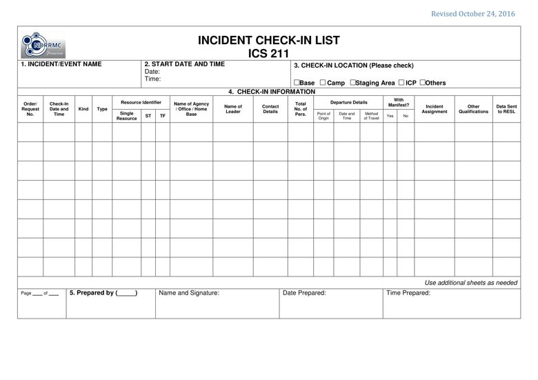

PURPOSE: The ICS 211 records arrival times at the incident of all resources, records the initial location of resources to facilitate subsequent assignments and supports demobilization by recording the home method of travel for resources checked in.
PREPARATION: The ICS 211 is initiated at a number of locations including staging areas, bases, camps and Incident Command Post to be accomplished by the leader/authorized representative / overhead of the resources. Preparations may be completed by the overhead at these locations or a check-in recorder from the Resources Unit. All accomplished 211s must be given to the Resource Unit Leader (RESL) as soon as possible.
DISTRIBUTION: The ICS 211s, once accomplished at various locations, are provided to the Resources Unit, Demobilization Unit and Finance / Administration Unit. The Resources Unit maintains a master list of all equipment and personnel that have reported to the incident / event.

BLOCK NO. |
BLOCK TITLE |
INSTRUCTIONS |
| 1 | Incident / Event Name | Enter the name assigned to the incident / event. |
| 2 | Start Date and Time | Enter the starting date (mm-dd-yyyy) and time (24 hour format) for the check-in. |
| 3 | Check-in Location | Check to indicate the location for the check-in. |
| 4 | Check-in Information | Enter the following check-in information. |
| Order/Request No. | Enter the Order/Request No. for the resource (only if applicable). |
|
| Check-in | Enter the date (mm-dd-yyyy) and time (24 hour format) of check-in of the resource. |
|
| Kind | Enter the kind of resource. Kind refers to broad categories of resources (e.g. crews, bulldozers, engines, SAR teams). |
|
| Type | Enter the type of resource. Type describes performance capability (e.g. T1 - highest capability, T2 - next to T1). |
|
| Resource Identifier | Determine whether the resource is:
Note: Indicate the resource identifier or the code designated for the single resource, strike team or task force. The resource identification shall be developed and maintained by the check-in recorder. |
|
| Name of Agency / Office / Home Base | Enter the name of agency, office or home base of the resource. |
|
| Name of Leader | Enter the leader / authorized representative of the resource. |
|
| Contact Details | Enter the contact details of the leader / authorized representative of the resource. |
|
| Total Number of Personnel | Enter the number of personnel. |
|
| Departure Details | Enter the following information about the departure of the resource:
|
|
| With Manifest? | Enter if there is an attached manifest containing the comprehensive list of resource breakdown. |
|
| Incident Assignment | Enter the incident assignment of the resource at the time of dispatch. |
|
| Other Qualifications | Enter additional duties pertinent to the incident / event that the resource is qualified to perform. |
|
| Data Sent to RESL | Enter the date (mm-dd-yyyy) and time (24 hour format the information pertaining to that entry was transmitted to the RESL. |
|
| 5 | Prepared by (___) | Enter complete name and signature of the person who prepared the specific page of the form, date (mm-dd-yyyy), and time (24hour format) the form was prepared and completed. Note: Indicate the position in the (_____). |